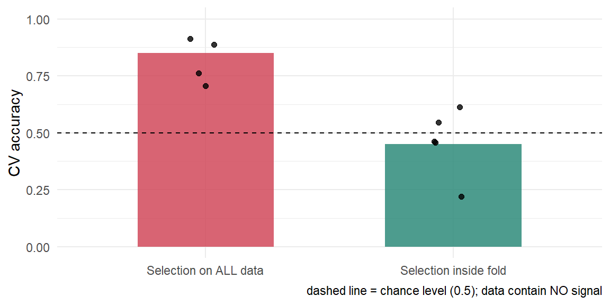

set.seed(2026)
n <- 100; p <- 2000
X <- matrix(rnorm(n * p), n, p, dimnames = list(NULL, paste0("G", 1:p)))
y <- factor(rep(c("A", "B"), each = n / 2)) # X와 아무 관련 없음
# 두 군 평균차의 t-통계량 상위 k개 선택
tstat <- function(X, y) {
g1 <- X[y == "A", , drop = FALSE]; g2 <- X[y == "B", , drop = FALSE]
abs(colMeans(g1) - colMeans(g2)) /
sqrt(apply(g1, 2, var) / nrow(g1) + apply(g2, 2, var) / nrow(g2))
}
top_k <- function(X, y, k = 20) order(tstat(X, y), decreasing = TRUE)[1:k]
fit_acc <- function(sel, tr, te) {
d_tr <- data.frame(y = y[tr], X[tr, sel, drop = FALSE])
d_te <- data.frame(X[te, sel, drop = FALSE])
m <- glm(y ~ ., data = d_tr, family = binomial)
pred <- ifelse(predict(m, d_te, type = "response") > 0.5, "B", "A")
mean(pred == y[te])
}
folds <- sample(rep(1:5, length.out = n))W2. 데이터 준비와 Feature Engineering
결측치·스케일링·인코딩·feature selection, 그리고 data leakage
🎯 Learning objectives
- 결측 메커니즘(MCAR / MAR / MNAR)을 구분하고 처리 전략을 고를 수 있다
- 모델별로 scaling이 필요한지 판단할 수 있다
- 범주형 인코딩 방식의 장단점을 설명할 수 있다
- Filter / wrapper / embedded feature selection을 구분할 수 있다
- data leakage를 식별하고, 파이프라인으로 구조적으로 차단할 수 있다
🤔 신호가 전혀 없는 난수 데이터로도 정확도 85%를 만들 수 있다. 어떻게?
1. 전처리는 모델의 일부 🧹
1) 현실
- 분석 시간의 대부분 — 모델 선택이 아니라 데이터 정리에 소모
- 성능 차이의 대부분 — 알고리즘 교체보다 feature 품질에서 발생
- 논문 재현 실패의 대부분 — 모델이 아니라 전처리 기술 부족에서 기인
2) 원칙 세 가지
- 전처리는 학습된 파라미터를 가진다
- 평균·표준편차·범주 목록·대치값 — 모두 데이터에서 추정한 값
- 따라서 모델 계수와 똑같이 취급해야 함
- 전처리는 training data로만 학습한다
- test set의 평균이 섞이는 순간 평가는 무효
- 전처리는 코드가 아니라 객체로 남긴다
- R
recipes, PythonPipeline— 재현성과 leakage 차단을 동시에 해결
- R
2. 결측치 🕳️
1) 결측 메커니즘
① MCAR (Missing Completely At Random)
- 결측 여부가 관측값·미관측값 모두와 무관
- 예 — 시퀀싱 플레이트 하나가 장비 오류로 통째로 유실
- 삭제해도 편향 없음. 다만 검정력만 손실
② MAR (Missing At Random)
- 결측 여부가 관측된 다른 변수로 설명됨
- 예 — 고령 환자일수록 특정 검사를 덜 받음(나이는 관측됨)
- 대치(imputation)가 유효한 영역
③ MNAR (Missing Not At Random)
- 결측 여부가 그 값 자체에 의존
- 예 — 발현량이 검출 한계 이하라서 측정 안 됨, 중증 환자가 추적 탈락
- 대치로 해결 불가. 결측 자체를 모델링해야 함
⚠️ 오믹스에서 결측은 대개 MNAR
- 프로테오믹스 — 저발현 단백질이 검출 한계 미만으로 누락
- 단일세포 — dropout은 낮은 발현과 기술적 결측이 뒤섞임
- 단순 평균 대치는 저발현 신호를 체계적으로 지움
2) 처리 전략
| 전략 | 방법 | 적합한 상황 | 위험 |
|---|---|---|---|
| 삭제 | complete-case, 변수 제거 | MCAR, 결측 비율 낮음 | 표본 손실, MAR/MNAR에서 편향 |
| 단순 대치 | 평균·중앙값·최빈값 | 결측 비율 매우 낮음 | 분산 과소추정 |
| 모델 기반 | kNN, MICE, missForest | MAR | 계산량, 대치 불확실성 무시 |
| 결측 표시 | 결측 여부 지시변수 추가 | MNAR 의심 | feature 수 증가 |
3) ⚠️ 결측 자체가 정보일 때
- MNAR 의심 시 — 대치와 동시에
is_missing지시변수를 남길 것 - 트리 계열 — 결측을 별도 분기로 직접 처리 가능(W7)
- 대치값은 training fold에서만 계산 — 전체 평균 사용은 leakage
3. 수치형 변수 📏
1) Scaling이 필요한가
| 필요함 | 불필요함 |
|---|---|
| 거리 기반 — kNN, k-means, SVM | 트리 기반 — decision tree, RF, XGBoost |
| 정규화 모델 — Ridge, Lasso, Elastic Net | 단순 선형회귀(해석만 바뀜) |
| PCA, t-SNE, UMAP | Naïve Bayes(변수별 독립 가정) |
| 경사하강법 기반 전반 | — |
- 정규화 모델에서 scaling 누락 → 단위가 큰 변수만 벌점을 받음
- 거리 기반에서 누락 → 단위가 큰 변수가 거리를 독점
2) 세 가지 scaling
- Standardization (\(z = (x-\mu)/\sigma\)) — 기본 선택, 정규분포 가정에 친화적
- Min-max (\([0,1]\) 축소) — 범위가 고정된 입력에 적합, 이상치에 취약
- Robust (중앙값·IQR 사용) — 이상치가 있을 때
3) 분포 변환
- log / log1p — count 데이터의 우측 꼬리 완화
- VST, rlog — RNA-seq의 평균-분산 의존성 제거 (DESeq2)
- CLR — 마이크로바이옴 상대존재비의 조성 데이터 문제 대응
- Rank 변환 — 배치 간 척도가 다를 때 최후의 수단
4) 이상치
- 삭제 전에 원인 확인 — 측정 오류인가, 실제 극단값인가
- 생물학적 극단값은 종종 가장 중요한 신호
- 모델 선택으로 우회 가능 — 트리 계열, robust loss
4. 범주형 변수 🏷️
1) One-hot encoding
- 범주 개수만큼 0/1 변수 생성
- 순서 없는 범주의 기본 선택
- 단점 — 고유값이 많으면 차원 폭발, 희소 행렬
2) Ordinal encoding
- 순서가 있는 범주에만 사용 — 병기(I/II/III/IV), 중증도
- 순서 없는 범주에 쓰면 없는 크기 관계를 모델에 주입
3) Target encoding
- 범주를 해당 범주의 목표변수 평균으로 치환
- 고유값이 많은 범주에 효과적
- ⚠️ leakage 위험이 가장 높은 기법 — 반드시 fold 안에서, smoothing과 함께
4) ⚠️ 고유값이 많은 범주
- 병원 ID, 배치 ID, 세포주 이름 등
- 빈도 낮은 범주는
other로 병합 - test set에만 등장하는 새 범주 처리 규칙을 미리 정의할 것
5. Feature Selection 🔍
1) 왜 줄이는가
- 차원의 저주 완화 (W13)
- 과적합 감소, 계산량 감소
- 해석 가능성 확보 — 유전자 20,000개보다 20개 패널
2) 세 가지 접근
① Filter
- 모델과 무관하게 통계량으로 사전 선별
- 분산, 상관계수, t-통계량, 상호정보량
- 빠름 / feature 간 상호작용 무시
② Wrapper
- 실제 모델 성능으로 부분집합 평가
- 전진선택, 후진제거, RFE
- 성능 좋음 / 계산량 매우 큼, 과적합 위험
③ Embedded
- 모델 학습 과정에 선택이 내장
- Lasso(W6), 트리의 변수 중요도(W7)
- 실무 기본 선택
3) 선택 기준
| 상황 | 권장 |
|---|---|
| p가 수만 규모 | filter로 1차 축소 → embedded |
| 해석이 목적 | Lasso, Elastic Net |
| 성능이 목적 | embedded 또는 선택 없이 정규화 |
| 표본이 작음 | 선택 자체를 최소화 — 불안정성 증가 |
6. Data Leakage 🚨
1) 정의
- 학습 시점에 알 수 없어야 할 정보가 모델에 들어가는 것
- 결과 — 검증 성능은 훌륭한데 실제 적용에서 무너짐
- 에러가 나지 않기 때문에 스스로 발견하기 매우 어려움
2) 흔한 형태
- 전처리 leakage — 전체 데이터로 scaling·대치·PCA 수행
- 선택 leakage — 전체 데이터로 feature 선택 후 교차검증
- 시간 leakage — 미래 정보가 과거 예측에 사용됨
- 그룹 leakage — 같은 환자의 샘플이 train/test에 분산
- 중복 leakage — 동일 샘플이 데이터셋에 중복 등록
- 재샘플링 leakage — SMOTE를 분할 전에 적용
⚠️ 가장 비싼 실수
- “전체 데이터로 유의 유전자를 뽑고, 그 유전자로 교차검증했습니다”
- 생명과학 논문에서 가장 흔한 형태
- 아래 실습에서 이 방법이 난수 데이터로 정확도 85%를 만들어내는 것을 직접 확인합니다
3) 🧪 실습: leakage를 직접 만들어보기
- 설계 — 샘플 100개, feature 2,000개, 전부 난수
- 목표변수
y도 난수. 즉 실제 신호는 0 - 정직한 모델이라면 정확도는 0.5 근처여야 함
# ❌ 틀린 방법 — 전체 데이터로 feature를 고른 뒤 교차검증
sel_all <- top_k(X, y, 20)
wrong <- sapply(1:5, function(f) fit_acc(sel_all, folds != f, folds == f))
# ✅ 올바른 방법 — 매 fold 안에서 다시 고름
right <- sapply(1:5, function(f) {
tr <- folds != f
fit_acc(top_k(X[tr, ], y[tr], 20), tr, folds == f)
})
data.frame(
method = c("Selection on ALL data", "Selection inside fold"),
accuracy = round(c(mean(wrong), mean(right)), 3)
) method accuracy
1 Selection on ALL data 0.85
2 Selection inside fold 0.45library(ggplot2)
res <- data.frame(
method = factor(rep(c("Selection on ALL data", "Selection inside fold"), each = 5),
levels = c("Selection on ALL data", "Selection inside fold")),
acc = c(wrong, right)
)
ggplot(res, aes(method, acc, fill = method)) +
stat_summary(fun = mean, geom = "col", width = .55, alpha = .85) +
geom_jitter(width = .08, size = 1.6, alpha = .8) +
geom_hline(yintercept = 0.5, linetype = 2) +
scale_fill_manual(values = c("Selection on ALL data" = "#d1495b", # leakage
"Selection inside fold" = "#2e8b7a")) + # correct
scale_y_continuous(limits = c(0, 1)) +
labs(x = NULL, y = "CV accuracy",
caption = "dashed line = chance level (0.5); data contain NO signal") +
theme_minimal() +
theme(legend.position = "none")
import numpy as np
from sklearn.feature_selection import SelectKBest, f_classif
from sklearn.linear_model import LogisticRegression
from sklearn.pipeline import Pipeline
from sklearn.model_selection import cross_val_score, StratifiedKFold
rng = np.random.default_rng(2026)
n, p = 100, 2000
X = rng.normal(size=(n, p))
y = np.repeat([0, 1], n // 2) # X와 아무 관련 없음
cv = StratifiedKFold(5, shuffle=True, random_state=2026)
# ❌ 틀린 방법 — 전체 데이터로 feature를 고른 뒤 교차검증
sel = SelectKBest(f_classif, k=20).fit(X, y)
X_sel = sel.transform(X)
wrong = cross_val_score(LogisticRegression(max_iter=1000), X_sel, y, cv=cv)
# ✅ 올바른 방법 — 선택을 Pipeline 안에 넣어 fold마다 다시 수행
pipe = Pipeline([
("select", SelectKBest(f_classif, k=20)),
("model", LogisticRegression(max_iter=1000)),
])
right = cross_val_score(pipe, X, y, cv=cv)
print(f"Selection on ALL data : {wrong.mean():.3f}")
print(f"Selection inside fold : {right.mean():.3f}")- 결과 해석
- 신호가 0인 데이터에서 0.5를 크게 웃도는 정확도 → 전부 허상
- 원인 — 2,000개 중 우연히 두 군을 잘 가르는 20개를 정답을 보고 골랐기 때문
- 그 20개는 test fold의 정보를 이미 담고 있음
- p가 클수록 부풀림이 커진다 — 오믹스 데이터가 특히 위험한 이유
- Ambroise & McLachlan (2002)이 마이크로어레이에서 지적한 문제와 동일
4) 올바른 순서
전체 데이터
↓ 분할 (train / test, 또는 CV fold)
↓ ── 여기서부터 fold 안 ──────────────
↓ 결측 대치 ← training fold로만 학습
↓ Scaling ← training fold의 평균·표준편차
↓ Feature selection← training fold의 통계량
↓ 재샘플링(SMOTE) ← training fold에만
↓ 모델 학습
↓ ── fold 밖 ───────────────────────
↓ 평가 (test fold는 변환만 적용, 재학습 금지)
파이프라인 객체를 쓰면 구조적으로 막힌다
- 손으로 순서를 지키는 것보다, 순서를 강제하는 도구를 쓰는 편이 안전
- R —
recipes+workflows - Python —
Pipeline+ColumnTransformer - 교차검증 함수에 파이프라인 전체를 넘기면 fold마다 자동으로 재적합됨
7. p ≫ n 오믹스 데이터 🧬
1) 무엇이 다른가
- feature 수가 샘플 수보다 2~3 자릿수 많음 — 유전자 20,000 vs 환자 100
- 완벽히 분리하는 feature 조합이 항상 존재 — 신호가 없어도
- 상관된 feature가 대량 존재 — 선택 결과가 불안정
- 배치 효과가 생물학적 신호보다 클 수 있음
2) 실무 권장
- 분할을 가장 먼저 — 그 다음 어떤 처리도 fold 안에서
- 배치를 분할에 반영 — 배치가 한쪽에 쏠리지 않도록 stratify
- 환자 단위 분할 — 같은 환자의 다중 샘플은 반드시 같은 fold에
- 선택 안정성 보고 — 여러 fold에서 반복 선택된 feature만 신뢰
- 외부 코호트 검증 — 내부 CV만으로는 부족 (W14)
Where this ends up
- 여기서 배운 순서가 W3 검증 설계의 전제가 됨
- fold 안에서 selection을 반복하는 구조 → W3의 nested CV
- 선택을 모델에 내장하는 접근 → W6의 Lasso
- 선택 안정성 해석 → W14의 variable importance
📝 Summary
- 전처리는 학습된 파라미터를 가진 모델의 일부 — training fold로만 학습
- 결측은 메커니즘(MCAR/MAR/MNAR)을 먼저 판단 — 오믹스는 대개 MNAR
- Scaling 필요 여부는 모델이 결정 — 거리 기반·정규화 모델은 필수, 트리는 불필요
- 범주형 인코딩은 순서 유무로 결정 — target encoding은 leakage 위험 최고
- Feature selection은 filter → embedded 순으로, 표본이 작으면 최소화
- Data leakage는 에러 없이 성능만 부풀린다 — 난수 데이터로 정확도 0.85 재현
- 방어책은 규율이 아니라 파이프라인 객체
- p ≫ n에서는 분할을 가장 먼저, 배치·환자 단위를 반영
🔑 Key terms
| 용어 | 정의 |
|---|---|
| MCAR / MAR / MNAR | 결측이 각각 완전 무작위 / 관측 변수로 설명됨 / 값 자체에 의존 |
| Imputation | 결측값을 추정치로 채우는 것. 대치값도 학습된 파라미터 |
| Standardization | 평균 0, 표준편차 1로 변환 |
| One-hot encoding | 순서 없는 범주를 0/1 지시변수로 전개 |
| Target encoding | 범주를 목표변수 평균으로 치환. fold 안에서만 수행 |
| Filter / Wrapper / Embedded | 선택이 모델과 무관 / 모델 성능으로 평가 / 학습에 내장 |
| Data leakage | 학습 시점에 알 수 없어야 할 정보가 모델에 유입되는 것 |
| Selection bias | 전체 데이터로 feature를 고를 때 발생하는 성능 부풀림 |
| Pipeline / recipe | 전처리 순서를 객체로 고정해 fold마다 재적합시키는 도구 |
➕ References
- Ambroise C, McLachlan GJ. Selection bias in gene extraction on the basis of microarray gene-expression data. PNAS 2002;99(10):6562–6566.
- Varma S, Simon R. Bias in error estimation when using cross-validation for model selection. BMC Bioinformatics 2006;7:91.
- Kaufman S, Rosset S, Perlich C. Leakage in data mining: formulation, detection, and avoidance. ACM TKDD 2012;6(4):15.
- Whalen S, Schreiber J, Noble WS, Pollard KS. Navigating the pitfalls of applying machine learning in genomics. Nature Reviews Genetics 2022;23:169–181.
- Kuhn M, Johnson K. Feature Engineering and Selection: A Practical Approach for Predictive Models. CRC Press, 2019. http://www.feat.engineering/
- van Buuren S. Flexible Imputation of Missing Data. 2nd ed. CRC Press, 2018.